Marvel's Spider-Man
The definitive web-swinging game. Peter Parker as you've always wanted to see him.
Review
Marvel's Spider-Man is the definitive realization of what a Spider-Man game should be. Insomniac Games spent years developing a traversal system of extraordinary fluidity — swinging, wall-running, zip-pointing, and launching off buildings across a lovingly detailed Manhattan — that makes simply getting from one mission to the next one of the most joyful acts of movement in gaming. The game exists to let you feel like Spider-Man, and it succeeds completely.
The story centers on an older, more experienced Peter Parker — a man juggling his life as a crime-fighter with a job at a university research lab, a complicated relationship with MJ, and a mentor-student bond with Otto Octavius that provides the emotional spine of the narrative. The game builds to a genuinely moving conclusion that earns its emotional beats through careful, patient character work rather than spectacle alone. The villains are memorable and well-performed.
The combat is satisfying and visually spectacular, emphasizing momentum, air time, and creative use of gadgets against diverse enemy types. Web shooters are limited and must be replenished, preventing mindless spam. The suit customization and suit power systems offer meaningful variety. Where the game is weakest is in its side mission variety — many crimes and challenges become repetitive quickly — but the core loop is strong enough that it rarely matters. The Miles Morales sequel improves on nearly everything here.
Strengths and Limits
- Best traversal system in any superhero game — swinging is genuinely euphoric
- Peter Parker is written and performed with warmth and emotional depth
- Combat is fluid, spectacular, and mechanically satisfying
- Manhattan is beautifully realized and packed with detail
- Narrative earns its emotional moments through careful character work
- Side mission variety becomes repetitive in the late game
- MJ stealth sections interrupt the flow and are less engaging
- Some open-world collectibles feel like padding
- PC port had some issues at launch (now resolved)
Reader Fit
This review is written around fit: who should play it, what kind of session it rewards, and what friction might make it wrong for another reader. A high grade does not mean every player should buy it immediately. It means the game has a clear identity, a strong reason to exist, and enough craft to justify attention from the right audience.